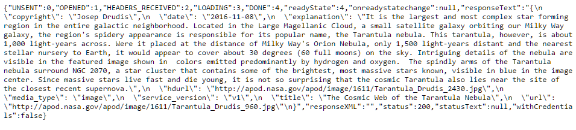

Sign Up
An API key is used for identification of a client that is accessing the API. The API service will frequently use this to track the number of requests in a given period as well as other metrics. If an API costs money then the API key is used to track how much to charge a particular client. Thus it can be very important to keep an API keep private.
For limited use NASA API offers a demo key that can be used for some simple requests. That is aptly named "DEMO_KEY", but it is strictly limited. You may read more about these limits from NASA API here. Graciously the NASA API is a free service and they only limit the number of requests in a given duration.
Head over to the sign up page, complete the simple form and you will receive your API key
Once complete the page will show you your API key and you will also receive an email with the same information. Keep it somewhere safe.
The internet can be a scary place, people are snooping all the time to get sensitive information. If we were for instance to write a webpage that accessed an API that charged per request and the API key was used directly in the GET requests that the page performed.
Then, anyone using the page could easily use our API key for themselves and we would have to pay for it. Although using our API key client side may not be hugely harmful except for possibly overusing it and getting locked out of using the NASA APIs for one hour. It is good practice to make things a bit more secure.
In order not to make our API key public let's create a proxy server that will handle the requests we want to send to NASA, retrieve the data from NASA and then return it to the client web browser. In this example we are only accessing the very simple Astronomy Picture of the Day API. The base request does not require any query strings just a GET call, but this will be a great example to bring everything together, we've looked at so far.
If you would like to read about the API on NASA's website please follow this link.
We'll try to keep our API reasonably secure here. First things first create a new file called interface.js, this is going to be the proxy server script file. Inside of that file we'll add these lines. These are packages that give the developer a framework to make things a bit easier when we want to receive GET and POST requests for instance.
9 //You can replace DEMO_KEY with your API key if you signed up for one
10 //We'll use this as a constant Global variable
11 var apiKey = "api_key=DEMO_KEY";
12
13
14 //express so we may access an easy framework of functions to interact with clients
15
16 var express = require('express');
17 var app = express();
29 //bodyParser allows parsing of POST to this server
30 //both JSON and x-www-form-urlencoded
31
32 var bodyParser = require('body-parser');
33 app.use(bodyParser.urlencoded({ extended: true }));
34 app.use(bodyParser.json());
35
36 //set the port for our server to listen on
37 //you may change this as desired within allowed port ranges
38 app.set('port', 8443);
Next we need to set the first route so that the server knows how to handle GET requests. The NASA APIs that we are exploring do not use POST reqests but this would be the place for the server to know how to handle them as well. So we'll also add these lines to the same file interface.js. Then to get the server started we'll add the final lines. The code is commented to explain what everything does.
40 //This is the GET request to the url:port#/apod of our server
41 //So once the browser goes to the url of our server at port # / apod
42 //this app will respond
43 //We'll use this for the request to the Astronomy Picture of the Day or APOD
44
45 app.get('/apod',function(req,res){
46
47 var url = "https://api.nasa.gov/planetary/apod?";
55 //concatanate the url and apikey
56 //This will become important later
57 url += apiKey;
59 //Create a new XMLHttpRequest that is used for the GET request to NASA
60 var XMLHttpRequest = require("xmlhttprequest").XMLHttpRequest;
61 var req = new XMLHttpRequest();
62
63 //open our request asynchronously
64 req.open("GET", url, true);
65
66 //we add an eventListener to wait until data returned
67 req.addEventListener('load', function(){
68 if(req.status >=200 && req.status < 400){
69 //Once the Date is received from NASA send it back to the client
70 res.send(req);
71 } else {
72 res.send("Server error or incorrect query");
73 }
74 });
76 //This submits the request to NASA API
77 req.send(null);
78 });
80 //start the server on port assigned previously
83 app.listen(app.get('port'), function(){
84 console.log('Express started on http://localhost:'+app.get('port')+';
press Ctrl-C to terminate.');
85 //the above console.log() should all be on one line
86 });
In order to use express and body-parser which are both packages that can be installed onto a Node.js we'll need to use NPM. If you don't have Node.js installed yet, you may find current version at nodejs.org. Please make sure it includes npm which is the Node Package Manager.
Once installed, using the command line in your operating system navigate to the directory that you have your interface.js file saved. We'll need to install a few packages, specifically the packages that we are using in the interface.js file.
From the command line run in the directory with interface.js
npm install express --save
npm install body-parser --save and
npm install xmlhttprequest --save
We're almost ready to get this up and running. To test this
from the command line from the directory with interface.js start the server by
running node interface.js
If all went well you should see the message "Express started on ..."
Depending on whether you are running your node on your local machine or a server navigate to http://yoururl:port# If everything went well you should see a response in your browser like this
This is the entire response that the NASA server sent back to us. There are a number of key value pairs at the beginning and end that tell us information about the request and the response itself. The one we are interested in is the "status", we wrote in our interface.js file that anything between 200 and less than 400 is an acceptable response. In this case we can see we received 200. Now let's look at this example here in JSFiddle.
JSFiddle is unable to interact with your localhost or a server that is only serving http. So in order to keep things interactive, with examples from JSFiddle. We need to take a brief detour to create a server that will run https.
We need to update the interface.js file. This process goes a bit beyond the scope of this tutorial on NASA API but a link to the interface.js file used is below. The app.Get is still the same and a response is sent back to our client just like we did in the previous example. But, now communication is wrapped in HTTPS.
The interface.js is hosted on a cloud server that has node.js and the same packages installed. The forever package was installed to keep the instance of interface.js running always.
Besides wrapping everything in HTTPS we also need to set a header in our response so that our server doesn't deny requests coming from JSFiddle.
All that being said, the examples given here can easily be adapted to a direct clientside GET request to NASA by removing the server step and using the API key directly inside the javascript examples. In a JSFiddle on the APOD API I will show you how this is possible with the DEMO_KEY. Sometimes though it may not work because the DEMO_KEY is very limited in the number of requests allowed in one hour.
//inside app.get() functions we need to set the header to allow different
//origins.
//The wildcard '*' will allow any website access, which could be very dangerous
//when used in the wrong cases, but here it is relatively safe and we need to
//allow JSFIDDLE access to the HTTPS server.
res.setHeader('Access-Control-Allow-Origin', '*');
//As an alternative if we only want JSFiddle access we could also do this following
//res.setHeader('Access-Conrol-Allow-Origin', 'https://fiddle.jshell.net');
References on this topic:
Now let's take a closer look at the return JSON object from NASA
{
"UNSET":0,
"OPENED":1,
"HEADERS_RECEIVED":2,
"LOADING":3,
"DONE":4,
"readyState";4,
"onreadystatechange":null,
"responseText":"{
\n\"copyright\": \"Joseph Drudis\",
\n \"date\": \"2016-11-08\",
\n \"explanation\": \"It is the largest...",
\n \"hdurl\": \"http://apod.nasa.gov/apod/image/1611/Tarantula...\",
\n \"media_type\": \"image\",
\n \"service_version\": \"v1\",
\n \"title\": \"The Cosmic Web of the Tarantula Nebula\",
\n \"url\": \"http://apod.nasa.gov/apod/image/1611/Tarantula...\"\n
}",
"responseXML":"",
"status":200,
"statusText":null,
"withCredentials":false
}
You can see that the "status" returned 200, which is great! The main things we ar after are contained in "responseText:", this is the JSON object that we can parse and then use to access the data we retrieved from NASA. In this API we want to pay attention to the media_type key. This will tell us if it's an image or video and we'll need to handle it differently, when we try to add this url element to our html page.
Since we have a basic web server interface that will call NASA API on our behalf we need to make a GET request to that service and that web server will make the request of NASA. So we'll take a look at another JSFiddle
Before we do that besides the extra work for the https in our interface.js
file the main line we'll change is res.send(req); to
res.send(req.responseText);
so that way the server only sends back the contents of responseText to the fiddle.
Otherwise we would get the entire response from NASA API wrapped inside the
reponseText from our proxy server and that would make access the informtion a bit
more cumbersome. In later examples we'll show you how to handle errors from the
NASA API and how to pass them along to the client.
In this example we'll only get the image url and in this case the one that is not HD.
Specifically we are making a call to our webserver at jpikel:8443/apod which will make the call behind the scenes to the Astronomy Picture of the Day (APOD) API as we wrote in our interface.js file. To keep our API key hidden from the common user. What's great though is that if you want to implement everything on the client side without a proxy server, simply replace the jpikel.com:8443/apod with NASA's url and the api key https://api.nasa.gov/planetary/apod?api_key=DEMO_KEY
A lot of this code works in the same way as the interface.js. The main
difference here is that we need to actually use the response we receive in
the variable req. So take a look at the line
var response = JSON.parse(req.responseText); This as we
learned will turn the stringified JSON object into a JS object.
Then we have a simple IF statement to check what kind of media we
are expecting to load. If it's a video we'll embed the video into a new
"iframe" and add it to the html body. If instead it's a picture we'll
just update the prexisting but empty img.src tag inside
the html body.
If you haven't already try it out!
Many APIs offer query parameters with which we can use to ask
for different things. So, now it's your turn we're going to add a
query parameter to the GET call so that we can get a picture from another date.
A query parameter is written immediately following the url in the GET request.
It is formated like so https://url/url?key=value
The APOD API allows us to ask for a specific date as a query. So
in our case the GET request url to our interface.js server should be
formatted as https://url/apod?date=YYYY-MM-DD
In addition we'll need to make some changes to our interface.js file.
Just after the apiKey variable is declared, inside the
app.get(function(){}); add the following lines. But, make
sure it is before the url += apiKey line. If you are confused
go take a look at the interface.js file that is available for download
as a reference.
if(Object.keys(req.query).length !== 0){
url += "date=";
url += req.query["date"];
url += "&";
}
This checks to see if there is a query that is longer than 0. Since we know that we must have a query of "date" we can specifically call it in this instance. In other cases this may not be wise because we may not know what queries a client may pass.
So when these two things have been implemented, try to implement the following things in the fiddle below:
Modify the url to include a date query
Retrieve the title and update the span with id="title" with this information
Retrieve the explanation and update the span with id="explanation" with
this information
Retrieve the date and update the span with id="date" with this information
If you don't have time or care to fiddle, the response is on the next page